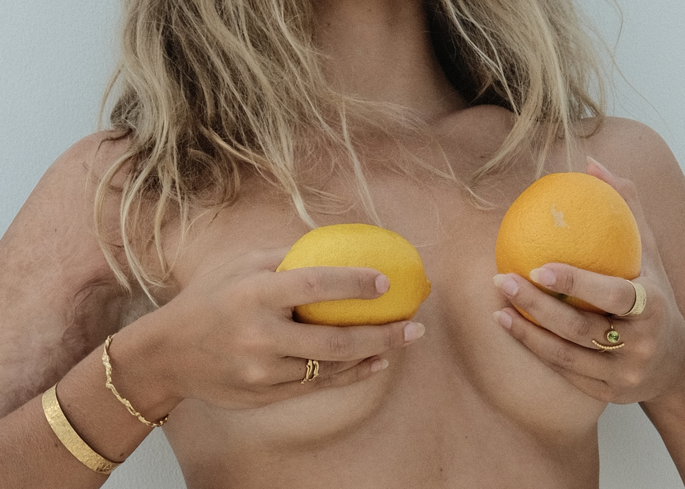

WHO ARE WE
URTA is high quality goods and pure energy in one. Unique and
sophisticated designs sourced from precious metals. URTA comes from a
place which is not just about aesthetics. It’s a way of being; energy
which with its uniqueness and beauty, raises the level of vibration at
the level of our hearts and consciousness. The brand was created in
2021 but the history began way earlier and it’s journey is just
getting started.

THE STORY
The author is a Polish & Serbian blooded Woman who grew up in Holland,
Poland, Spain and Serbia. She has felt, seen, smelled, heard and
tasted the world in various ways which helped her expand and love in
many colors. Travelling has become not only a huge part of her life
but also a major source of inspiration. Exploring this beautiful world
transitioned into a deep dive into discovering her inner soul. The
trip to Bali is the climax as well as the beginning of URTA – the
fruit brought up to light in todays presence.